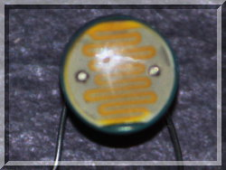
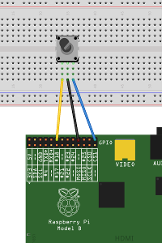
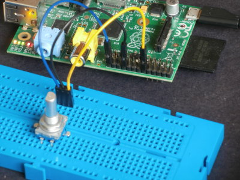
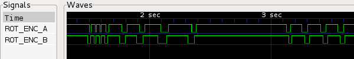
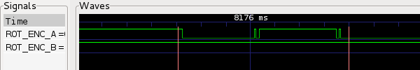

|
 |
 |
| pigpio pigpio C I/F pigpiod pigpiod C I/F Python pigs piscope Misc Examples Download FAQ Site Map | Rotary Encoder ExampleThe following code shows one way to read an incremental mechanical rotary enoder (the sort used for volume control in audio systems). These rotary encoders have two switches A and B which return a quadrature output, i.e. they are 90 degrees out of phase. SETUPThe common (centre) terminal should be connected to a Pi ground.The A and B terminals may be connected to any spare gpios. Here A to gpio18 (P1-12), common to ground (P1-20), B to gpio7
(P1-26).  CODE#include <stdio.h>
BUILDcc -o rotary_encoder rotary_encoder.c -lpigpio -lrt
-lpthread
RUNsudo ./rotary_encoderWhile the program is running you can capture the waveform using the notification feature built in to pigpio. Issue the following commands on the Pi. pigs no
Twiddle the rotary encoder forwards and backwards for a few
seconds. Then enter pigs nc 0The file re.vcd will contain the captured waveform, which can be viewed using GTKWave. Overview  Detail of switch bounce. Contact A bounces for circa 700 us before completing the level transition  |
[pigpio]
[pigpio C I/F]
[pigpiod]
[pigpiod C I/F]
[Python]
[pigs]
[piscope]
[Misc]
[Examples]
[Download]
[FAQ]
[Site Map]
© 2012-2020 |
e-mail: pigpio @ abyz.me.uk |
Updated: 30/04/2020 |